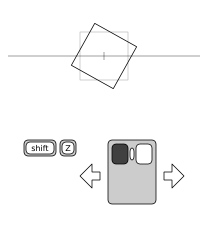
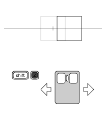
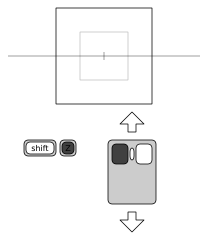
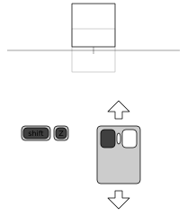

Using Vrui Applications
This document serves as an overview of the Vrui application user interface in desktop simulation mode. It describes basic viewpoint navigation, interaction with menus and dialog windows, tool management, and virtual input devices.
The default Vrui application user interface on the desktop uses the mouse (assuming a two-button mouse with scroll wheel) and the Z and left shift keys for navigation. The navigation metaphor is the "virtual trackball," where an imagined free-spinning sphere is centered on the screen, and can be dragged with the left mouse button. All objects in the scene react to dragging as if they were attached to the imaginary sphere. In addition to the virtual trackball, the navigation offers panning in the screen plane, dollying (i.e., translation orthogonally to the screen plane), and zooming (i.e., scaling of the scene with respect to the screen center). To aid navigation in 3D scenes, the navigation tool displays a 3D crosshair in the screen plane when it is active. The crosshair is mostly used to judge whether 3D objects are located in front of or behind the screen plane.
|  |
 |
 |
 |
| Figure 1: The four navigation modes (from left to right: rotating, panning, zooming, dollying) and how they are mapped to mouse buttons/keys in the Vrui default configuration for desktop environments. The diagrams show the desktop from above, with the screen plane denoted by the horizontal grey line, and the screen center (center for rotation and zooming) denoted by the grey tick mark. |
The default assignment of mouse buttons/keys to navigation functions is as follows (see Figure 1 for illustration):
- Left mouse button -- rotating
- Pressing only the left mouse button will rotate the scene around the screen center using the virtual trackball metaphor.
- Z key -- panning
- Pressing only the Z key button will pan the scene inside the screen plane. Panning is scaled such that 3D objects directly in the screen plane move exactly with the mouse cursor.
- Left mouse button + Z key -- zooming
- When the left mouse button and the Z key are pressed simultaneously, dragging the mouse up will zoom out, i.e., reduce the scale of the entire scene, and dragging the mouse down will zoom in, i.e., increase the scale of the entire scene. The center point of scaling is the screen center (the center of the 3D crosshair). This means that objects behind the screen plane move farther away when zooming in, which might make it appear as if they are not becoming bigger because scaling is cancelled out by perspective foreshortening. When scaling to "zoom in" on a particular object, it is best to first bring that object, or a point of interest on that object, to the screen plane.
- Mouse wheel -- zooming
- Rolling the mouse wheel up or down will zoom out or in, respectively, by a fixed factor.
- Left mouse button + Z key + left shift key -- dollying
- As opposed to zooming, dollying moves the entire scene towards or away from the viewpoint. Due to perspective foreshortening, dollying has a similar effect to zooming, but is a fundamentally different operation. When the left mouse button, the Z key, and the left shift key are pressed simultaneously, dragging the mouse up will dolly out, i.e., move the scene farther away from the viewpoint, and dragging the mouse down will dolly in, i.e., move the scene closer to the viewpoint. The 3D crosshair can be used to judge when dollying brings an object, or a point of interest on an object, into the screen plane.
- Mouse wheel + left shift key -- dollying
- Rolling the mouse wheel up or down with the left shift key pressed will dolly out or in, respectively, by a fixed distance. Continuous dollying using the mouse wheel is a convenient way to "fly through" a 3D scene.
The default mapping is intended for systems without a middle mouse button, or where the middle mouse button cannot be used by applications without changes to the windowing system (such as MacOS X). If the system has a usable middle mouse button, it is recommended to use the middle mouse button in place of the Z key. This can easily be achieved by changing one line in the Vrui configuration file.
Simplified Mouse Navigation Tool
The multiple buttons and keys used by the standard mouse navigation tool can be confusing for new users. To help them get used to Vrui's navigation metaphor, Vrui offers a simplified mouse navigation tool using only a single mouse button and a dialog window to switch between navigation modes (rotating, panning, etc.). This tool can be associated with any desired mouse button by selecting a "Mouse (via Dialog Box)" tool from the "Navigation" submenu in the tool selection menu (see Section "Tool Management").
When the aforementioned tool is assigned to a button, it will open a dialog window in the center of the screen. The dialog contains four radio buttons for the different navigation modes, and a toggle button to turn the navigation crosshair on or off. Users can interact with the dialog as described in Section "Dialog Window Interaction." Each of the tool's four navigation modes works exactly the same way as the corresponding mode in the standard mouse navigation tool.
Most Vrui applications contain a main menu that can be opened by pressing and holding the right mouse button. Although the menus (and all other widgets) are represented as 3D objects, they behave almost exactly like regular 2D menus in desktop mode. To select a menu entry, press and hold the right mouse button, move the mouse to the desired menu option (until the menu option becomes highlighted), and then release the right mouse button to select the option.
Most Vrui applications have their own main menus, but Vrui itself has a system menu to access functionality within Vrui in an application-independent manner. If a Vrui application does not create a main menu for itself, the Vrui system menu will show up immediately when the right mouse button is pressed. Otherwise, the Vrui system menu will be a submenu at the very bottom of the application-defined main menu.
The Vrui system menu has the following entries:
- Dialogs
- This submenu lists all currently opened (but potentially minimized) stand-alone dialog windows. By selecting a minimized dialog window, the window will be re-opened at its last position. By selecting a non-minimized dialog window, it will be moved to the mouse cursor position.
- View
- This submenu contains entries to store and retrieve viewing setups in an environment-independent format. In other words, if an application is run on a desktop, and one particular 3D object is centered on the screen, then saving the current view and loading it in the same or a different environment will have the same 3D object approximately centered in the environment.
- Load View
- This menu entry opens a file selection dialog box (see below), from which users can select a viewing setup file to load.
- Save View
- This menu entry saves the current viewing setup to a file called SavedViewpointXXXX.view, where the XXXX are a four-digit number making the file name unique.
- Restore View
- This menu entry restores the viewing setup to the one that was most recently saved during the current invocation of the Vrui application. Vrui retains an unspecified number of previously saved viewing setups in a stack.
- Devices
- This submenu contains entries to create and destroy virtual input devices, and to load and save the current state of all tools bound to input devices.
- Create One-Button Device
- This menu entry creates a new virtual input device with one button, which can subsequently be bound to an arbitrary tool. The new device appears at the position set in Vrui's main configuration file, which is usually close to the center of the screen. However, a new device might be temporarily occluded by other 3D objects in the scene.
- Create Two-Button Device
- This menu entry creates a new virtual input device with two buttons, which can subsequently be bound to arbitrary tools. The new device appears at the position set in Vrui's main configuration file, which is usually close to the center of the screen. However, a new device might be temporarily occluded by other 3D objects in the scene.
- Destroy Oldest Device
- Virtual input devices can currently only be destroyed in the order in which they were created. This menu entry destroys the least recently created virtual input device and any tools bound to it.
- Load Input Graph
- This menu entry loads a previously saved input graph, i.e., a set of virtual input devices in addition to the physical input devices, and the graph of all tools bound to any physical or virtual input devices. Any existing virtual input devices, and any tools bound to any devices, will be destroyed before loading the selected input graph.
- Save Input Graph
- This menu entry saves the current input graph, i.e., all currently existing virtual input devices, and the complete graph of tools bound to any physical or virtual input devices. Currently, the input graph is saved to a file "InputGraph.cfg" in the current directory at the time the menu entry is selected.
- Show Scale Bar
- This menu entry shows or hides a scale bar, which can indicate the real-world sizes of 3D objects in the scene, and can also be used to adjust the scale of Vrui's display to any from a set of fixed ratios.
- Quit Program
- Selecting this menu entry will quit from the Vrui application immediately, just as pressing the Escape key or closing the application's main window would. Vrui will not ask for confirmation.
Many Vrui applications contain stand-alone dialog windows to change settings inside the application. These dialog windows are usually brought up by selecting options in an application's main menu (such as "Show Render Dialog"), and appear in the screen plane, usually in the center or at the position where the selection was made. Dialog windows can be "minimized" by selecting the "underscore" button in the right-hand side of their title bars. Minimized dialog windows are not displayed, but remember their positions and can be brought back onto the screen by selecting their names from the "Dialogs" submenu in Vrui's system menu. Some dialog windows can be closed permanently by clicking the "X" button in the right-hand side of their title bars, or by unchecking the option in an application's menu that opened them initially. Some dialog windows are closed implicitly when their owning entity is destroyed, e.g., a tool's settings dialog windows can only be closed by destroying the tool owning it.
Interacting with dialog windows (and the widgets they contain) is mapped to the left mouse button. If the left mouse button is clicked while over a dialog window, it interacts with the dialog window; if it is clicked anywhere else, it is used for navigation as explained above. Vrui dialog windows behave almost identically to regular 2D dialog windows and widgets, e.g., they can be moved by dragging the blue title bar, and some can be resized by dragging their edges or corners.
The scale bar is a special dialog window with a non-standard appearance. It is used to indicate the size of objects in a 3D scene, and to quickly set the display's zoom factor to a "standard" ratio, such as 1:10 or 200:1. The scale bar is drawn as a horizontal bracketed line of variable length, with a bottom label and a top label. The bottom label shows the length of the horizontal line in the measurement unit defined by the current Vrui application (some applications do not define length units, in which case the length will be shown as a unit-less value). As the user changes the display's zoom ratio, for example using the zoom function of the default mouse viewpoint navigation tool, the scale bar will automatically adjust its length.
The top label shows the current zoom ratio, as <physical space length>:<navigational space length>. A ratio of 1:1 means that one inch, meter, etc. in physical space, i.e., on the screen, corresponds to exactly one inch, meter, etc. in navigational space, i.e., in the virtual 3D objects. If the ratio's first number is larger, it means that a physical space unit is shorter than the same navigational space unit, which means the display is "zoomed in," whereas a larger second number means a physical space unit is longer than the same navigational space unit, meaning the display is "zoomed out." For example, a ratio of 1:100 means that one centimeter on the screen corresponds to one meter in the displayed 3D world, and a ration of 10000:1 means that one micrometer in the 3D world corresponds to one centimeter on the screen.
The scale bar can be used to quickly change zoom ratios by clicking the left mouse button on the left or right thirds of the horizontal line. Clicking on the left third will zoom out to the next smaller "standard" ratio (..., 10:1, 5:1, 2:1, 1:1, 1:2, 1:5, 1:10, ...), and clicking on the right third will zoom in to the next larger standard ratio. The entire scale bar can be dragged to different positions on the screen by clicking and holding the left mouse button over the central third of the horizontal line.
The basic facility supporting the portability of Vrui applications between VR environments and the desktop is the use of so-called tools to map input device events such as button or key presses to program functionality. Each type of tool has a certain number of button slots and/or valuator slots, which receive events from input device buttons or valuators, respectively (buttons and valuators are jointly referred to as features). For example, the default mouse navigation tool described in Section "Viewpoint Navigation" has four input slots: a button slot to trigger rotation, a button slot to trigger panning, a button slot to switch between zooming and dollying, and a valuator slot for quick zoom or dolly. When a tool is created, either at start time or dynamically during run time, it is bound by connecting its input slots to concrete features on concrete input devices. The default mouse navigation tool is bound at start-up to the following input device features: the left mouse button, the Z key, the left shift key, and the mouse wheel.
In the simplest case, a tool is bound to a set of features, and those features are subsequently unavailable to be bound to any other tools. Such simple tools act as "caps" on their bound input device features. However, many Vrui tool types are more complex, in that they create their own forwarded input devices, which themselves have buttons and/or valuators which can be bound to other tools. Such tools act as "forwarders" on some of their bound input device features. For example, since the mouse device in Vrui's desktop configuration is located at the viewer's eye and not in the screen plane, it is often necessary to bind a "Mouse->Screen Projector" tool to a mouse button that is to be used for 3D interaction in the screen plane. This tool binds to one or more input device buttons, and creates a forwarded input device which resides at the intersection of a ray going from the viewer's eye through the mouse cursor and the screen plane. The buttons to which the tool is bound are forwarded directly to the forwarded input device. In effect, after binding a mouse->screen projector tool to a button, that same button is still available to be bound to other tools, but the button will now be located in the screen plane. By stacking tools in this fashion, Vrui can create and maintain fairly complex input graphs. The roots, or the zeroeth level, of an input graph are the physical, i.e., really existing, input devices, and the first graph layer is formed by all tools only bound to physical devices. Some of these tools may create forwarded devices, which form the second graph layer. The third graph layer, in turn, is formed by all devices that are bound only to (physical and forwarded) input devices from the zeroeth and first graph levels, and so forth. The ability to stack tools is a major source of flexibility in Vrui's user interface, allowing users to achieve complex tasks by combining relatively simple tools.
Although Vrui applications start with a default set of tool bindings (which is described in the preceding sections), these bindings can be changed at any time. New tools can be created an be bound to previously unbound input device buttons or valuators, and bound tools can be destroyed.
Binding Tools
The tool binding process starts by the user pressing and holding a previously unbound input device button or valuator. In response to such an event, Vrui will pop up the tool selection menu, which shows the entire hierarchy of available tools as a context menu with several levels of submenus. The user will then select the desired type of the new tool from the menu, and release the initially pressed button or valuator. This will mark the initially pressed feature to be bound to the tool's first input slot of a matching type (button or valuator). If the selected tool type only has one input slot, the tool will be created immediately, and the binding process is complete. If the tool type has more than one input slot, or has any optional input slots, Vrui will next pop up the tool binding dialog window. This window prompts the user to press additional previously unbound input device features, which will then be bound to the new tool's indicated input slots. If a tool type does not have optional input slots, the binding process is complete once all required input slots have been bound. Otherwise, the user can continue binding any number of additional features to the tool's optional input slots. To finish binding optional features, the user has to press the initially bound input device feature again. It is also possible to cancel creation of a new tool by pressing the initially bound feature again.
For example, should the default mouse navigation tool ever get lost, this is the process to recreate it with the same bindings:
- Press and hold the left mouse button. This pops up the tool selection menu.
- Select "Mouse (Multiple Buttons)" from the "Navigation" submenu and release the left mouse button. This will bind the left mouse button to the tool's "rotate" input slot, and pop up the tool binding dialog window.
- Press and release the Z key to bind it to the tool's "Pan" input slot.
- Roll the mouse wheel to bind it to the tool's "Quick Zoom/Dolly" input slot.
- Press and release the left shift key to bind it to the tools' "Zoom/Dolly Switch" input slot. This will close to tool binding dialog window, and create the mouse navigation tool.
The following two-step process stacks a measurement tool over a mouse->screen projector tool, bound to the 1 key in this example, so that the user can measure positions, lengths, and angles in the screen plane:
- Press and hold the 1 key. This pops up the tool selection menu.
- Select "Mouse->Screen Projector" from the "Transformer" submenu. This will bind the 1 key to the mouse-screen projector, and pop up the tool binding dialog window.
- Since the mouse->screen projector tool has optional input slots, it is possible to bind any number of additional buttons. To finish at this point and only bind the 1 key, press and release the 1 key again. This will close the tool binding dialog window, and create the mouse->screen projector tool.
- Press and hold the 1 key again. Since the key is forwarded to a forwarded input device by the mouse->screen projector tool, and that forwarded button has not been bound yet, the tool selection menu will pop up again.
- Select "Measurement Tool" from the "Utility" submenu. This will bind the forwarded 1 key to the measurement tool's "Measure" input slot. Since the tool only has one input slot, the binding process is complete at this point, and the tool binding dialog window will not pop up. Instead, the newly created measurement tool will pop up its measurement dialog.
- Take measurements in the screen plane by pressing the 1 key.
Destroying Tools
Tools can be destroyed at any time by pressing an input device feature bound to a tool over the tool kill zone. In Vrui's desktop environment, the tool kill zone is a red rectangle in the lower-left hand corner of Vrui's display window. The moment an input device feature is pressed (and held) over the tool kill zone, Vrui displays a visualization of the partial input graph rooted at the pressed input device feature. If the input device is moved out of the tool kill zone while the feature is still pressed, this visualization will move with it, and subsequently releasing the pressed feature outside of the kill zone will not destroy the tool. In that visualization, green squares indicate tools, and blue squares indicate forwarded input devices. Tool squares are labeled with the tool's type to the right, and the functions of tools' input slots are displayed below the tool squares.
If an input device feature is pressed and released over the tool kill zone, the topmost tool in the partial input graph rooted on that feature is destroyed without confirmation. In other words, to completely clear a stack of tools bound to an input device feature, the tool kill zone has to be used multiple times, until the feature's partial input graph has an empty visualization.
Available Buttons in Desktop Mode
Besides the default buttons/keys used for viewpoint navigation, menu interaction, and dialog window interaction, all mouse buttons and most keyboard keys (excluding function keys and special keys) can be bound to tools. Additionally, the left Ctrl, Alt, and "Super" (Windows logo) keys act as modifier keys. This means they don't create key press events by themselves, but act as switches between independent button planes. E.g., key/button combinations such as left mouse button (LMB), Ctrl-LMB, Alt-LMB, Super-LMB, Ctrl-Alt-LMB, ... are all different buttons that can be bound to different tool input slots. Three modifier buttons together create eight button planes total, which means that users have around 800 keys available to bind to tools.
"Sticky" Keys
When switching between planes of buttons using any combination of modifier keys (such as Ctrl or Alt), any buttons that were pressed in the previously active plane will stay pressed until the same plane is activated the next time. This allows to "hold" buttons from different planes while working with the same buttons in other planes. For example, by pressing and holding the Alt key, then pressing and holding the 1 key, and then releasing the Alt key (while still holding the 1 key pressed), the "Alt+1" virtual button stays pressed until the next time the "Alt" button plane is activated by pressing the Alt key. This "sticky key" behavior allows for convenient tricks in many Vrui applications, but can sometimes cause confusion if a key gets stuck inadvertently. In case of doubt, sticky keys can be cleared by quickly pressing all combinations of modifier keys while not holding any other buttons/keys or valuators.
The Vrui Tool Hierarchy
The hierarchy of available Vrui tool classes, including the tools already described in preceding sections is:
- Navigation
- A navigation tool maps input device events and motion to 3D viewpoint navigation. The concrete navigation tool described in the first section is a "Mouse (Multiple Buttons)" navigation tool, connected to the left mouse button, the Z key, the mouse wheel, and the left shift key.
- Surface-Aligned Navigation
- Surface-aligned navigation tools are used for 3D viewpoint navigation just as generic navigation tools, but they cooperate with running Vrui applications that define some notion of a "surface" to which viewers are bound. For example, in a terrain visualization application, surface-aligned navigation tools would constrain navigation such that a user's feet are always placed on the terrain. In Vrui's default desktop configuration, an "FPS (Mouse Look + Buttons)" navigation tool is bound to the Q key (to toggle it on/off), to the WASD keys (to walk forward and backwards and sidestep), and to the mouse to look around. This tool provides a navigation metaphor identical to typical first-person computer games.
- Transformer
- A transformer tool takes one or more source input devices (physical or virtual), and transforms them in some way to create another virtual input device that is permanently bound to the source input devices. Transformer tools are a main source of the flexibility of Vrui's input model. The most important concrete transformer tool classes are:
- Mouse->Screen Projector
- This is probably the most important tool class for desktop environments. Since user interactions in Vrui are inherently three-dimensional, the "raw" physical mouse device, which does not have a 3D position, can typically not be used directly. Mouse->screen projector tools create a virtual input device that follows the 2D mouse cursor as it intersects any of the screens present in a Vrui environment. In other words, the virtual device moves in the plane that is defined by the navigation crosshairs drawn by the standard mouse navigation tool.
- User Interface
-
User interface tools map input device events to interactions with a Vrui application's user interface, i.e., menus, dialog windows, and virtual input devices. They fall into several sub-classes:
- Menu Handler
- A menu handler tool supports popping up, and interacting with, context menus. The "Screen-Aligned Menu" tool described in the second section always opens menus in the screen plane, and is connected to the right mouse button in the default Vrui desktop configuration.
- Input Device Driver
- Input device driver tools are used to control virtual input devices, which provide a simple means to enable fully three-dimensional interaction in a two-dimensional desktop environment. The most important input device driver tool class for desktop environments is:
- Ray-Based Driver
- The ray-based driver tool is meant to map to a mouse, and can translate and rotate virtual input devices and toggle their buttons using a single mouse button or key. Its user interface is described in detail in Section "Virtual Input Devices."
- GUI Interaction
- A GUI interaction tool maps input device events to interactions with GUI elements, i.e., menus and dialog windows. This same functionality is included in the standard mouse navigation tools described above, but is available in a stand-alone tool in case a user does not want to use the standard navigation tools for some reason.
- Pointer
- Pointer tools have a wide variety of different functions, but they share a common purpose, in that they are primarily used to point out features in a 3D application that is used by multiple users at the same time. In that regard, they are a generalization of that secondary function of mouse cursors in 2D desktop environments, or a virtualization of real-life tools such as laser pointers. The most important sub-classes are:
- Laser Pointer
- Laser pointer tools are the simplest pointing tools: they emit a red line from the position of the input device along its main pointing direction.
- Flashlight
- Flashlight tools use a virtual spot light source to illuminate 3D objects, and while their main purpose is to add interactively controlled light sources to a 3D environment, they have a secondary purpose of pointing out those objects.
- Utility
- Utility tools implement functions that do not have a well-defined meaning inside Vrui itself (such as navigation or GUI interaction), but are of interest to users. There are several common utility tools:
- Measurement Tool
- Measurement tools are used to measure positions, distances, or angles in 3D space, using physical, navigational, or user-defined coordinates. They are application-independent per se, but can be combined with application-specific transformer tools for a variety of tasks. The typical scenario for measurement tools in a desktop environment is to bind them to a mouse->screen projector tool to take measurements in the screen plane.
- Locator
- A locator tool is used to notify a Vrui application that an action is to take place at a particular position in 3D space. What exactly this action is is defined by the Vrui application. For example, in the ShowEarthModel example application, a locator tool is used to select and query information about earthquakes. The typical way to bind a locator tool in a desktop environment is to first bind a mouse->screen projector tool to some mouse button/modifier key combination, and then bind a 6-DOF locator tool to the same mouse button/modifier key combination. As a result, the action will take place at the mouse's position inside the screen plane.
- Dragger
- A dragger tool is similar to a locator tool in that it works in cooperation with a Vrui application, but it has different semantics. Whereas a locator tool simply causes an action at a particular 3D location, a dragger tool selects an application object at its 3D position when its associated button is pressed, and then drags that object while the buttons stays pressed. Dragger tools are usually bound to the mouse in the same way as locator tools, by first binding a mouse->screen projector tool and then a 6-DOF dragger tool.
The biggest limitation of desktop environments is that they do not provide a means for direct 3D interaction. The typical desktop input device, the mouse, is a 2D device; it can only move in a plane. While Vrui provides several special-purpose tools to support mouse interaction, such as the mouse navigation tools, most 3D interaction tasks cannot be achieved with a mouse without an intermediate visual interaction metaphor. To this end, Vrui uses virtual input devices, which are 3D glyphs representing the position, orientation, and button states of 3D input devices. Virtual input devices are only a representation; in order to interact with them, Vrui offers several tool classes that map interactions with physical input devices, such as a mouse, to interactions with the virtual input devices.
Virtual Input Device Glyph
A virtual input device is rendered as a "wireframe" cube, with vertices drawn as small cubes, and edges as thin rectangles. The glyph is centered around the virtual input device's position, and aligned with the device's local coordinate frame. Each button of the virtual input device is represented as a small cube floating above the wireframe cube, with a green cube denoting a pressed button.
An additional small box floating underneath the wireframe cube is used to toggle the virtual input device's navigation behavior. If that cube is grey, the virtual input device will move in physical space, i.e., navigation will not affect the virtual input device, i.e., it will stay fixed relative to the environment and move relative to application objects during navigation. If the cube is green, the virtual input device will move in navigational space, i.e., it will stay in a fixed position and orientation with respect to application objects.
Virtual input devices can be created and destroyed dynamically, either under application control, or via entries in Vrui's system menu.
Ray-Based Input Device Driver
A ray-based driver is an input device driver tool that maps 2D interactions with a mouse device to 3D interactions with a virtual input device. The state of a virtual input device's buttons (and its navigation mode button) can be toggled by pressing the button or key bound to the driver tool over the small cubes representing the buttons. The virtual input device's position or orientation can be changed in the following three ways:
- Face Dragging
- If the driver tool's bound button or key is pressed over one of the wireframe cube's faces, dragging the mouse while holding the button will translate the virtual input device in the plane defined by the picked face.
- Edge Dragging
- If the driver tool's bound button or key is pressed over one of the wireframe cube's edges, dragging the mouse orthogonal to the picked edge while holding the button will rotate the virtual input device around an axis parallel to the picked edge, through the wireframe cube's center.
- Vertex Dragging
- If the driver tool's bound button or key is pressed over one of the wireframe cube's vertices, dragging the mouse while holding the button will rotate the virtual input device around the wireframe cube's center using a virtual trackball metaphor similar to the standard mouse navigation tools (Note: this dragging mode is currently somewhat broken).
The following process binds a ray-based driver to a button or key, for example the 1 key:
- Press and hold the 1 key. This pops up the tool selection menu.
- Select "Ray-Based Driver" from the "Input Device Driver" submenu in the "User Interface" submenu. This will bind the 1 key to the ray-based driver tool's main input slot, and pop up the tool binding dialog window.
- Since the ray-based driver tool has optional input slots, which are forwarded directly to a currently-grabbed virtual input device, it is possible to bind any number of additional buttons. To finish at this point and only bind the 1 key, press and release the 1 key again. This will close the tool binding dialog window, and create the ray-based driver tool.
- Interact with virtual input devices by pressing and holding the 1 key over the virtual input device's glyph.
Before a virtual input device can be used for meaningful actions, tools have to be bound to its virtual buttons. The tool binding process for virtual input devices works the same as for physical input devices, but since virtual input devices are moved indirectly by using input device driver tools, the process is a bit more cumbersome. For example, the process to bind a clipping plane to a virtual input device's first button, assuming the 1 key is mapped to a ray-based driver tool, is:
- Press and release the 1 key while pointing at a virtual input device's button (a grey cube drawn above the device's main glyph). This will "press" the virtual button (the grey box turns green), and, since the virtual button is still unbound, pop up the tool selection menu. Note that the tool selection menu does not react to interactions with the mouse, since it was invoked by the virtual input device's virtual button.
- Press and hold the 1 key while pointing at the virtual input device's main glyph to drag it. While doing so, note how the tool selection menu reacts to the virtual input device. By dragging the virtual input device over the "Pointer" menu entry, and then into the "Pointer" submenu, highlight the "Clipping Plane" menu entry. Then release the 1 key, and note that the menu entry stays highlighted.
- Press and release the 1 key over the currently pressed (green) virtual button to "release" it. The green button cube will turn back to grey, the tool selection menu will close, and the virtual button will be mapped to the selected tool's first button slot. Since the clipping plane tool only has one button slot, the tool selection process is complete and the tool binding dialog window will not pop up.
- Press and release the 1 key again to press the virtual button, and activate the clipping plane. The clipping plane stays active until the virtual button is released again.
Tools bound to a virtual input device can be destroyed in the same way as tools bound to other devices. One has to move the virtual input device over the tool kill zone (being careful not to accidentally delete the input device driver tool in the process), press and release the virtual button, and then drag the virtual input device away from the tool kill zone. However, it is sometimes easier to destroy the entire virtual input device via Vrui's system menu, and start over with a new virtual input device.